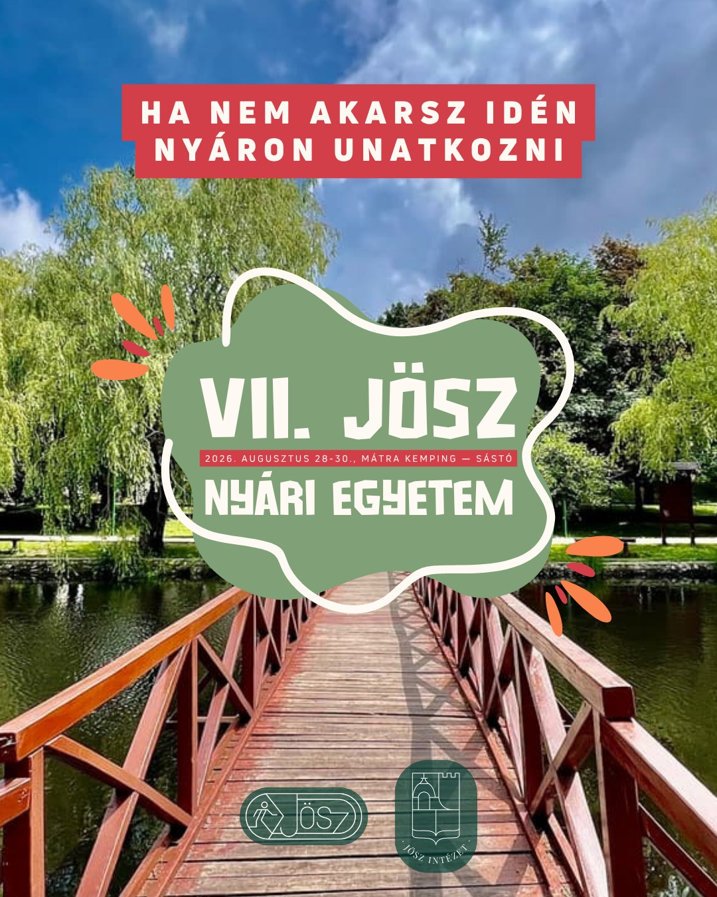
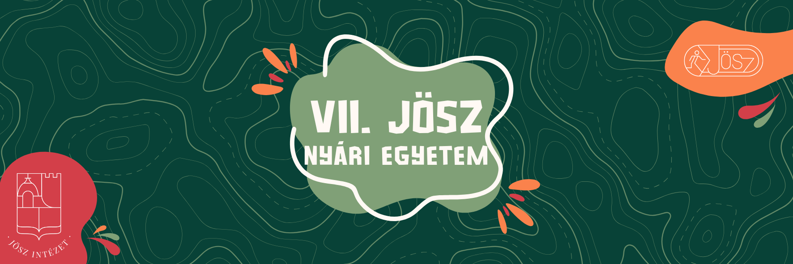
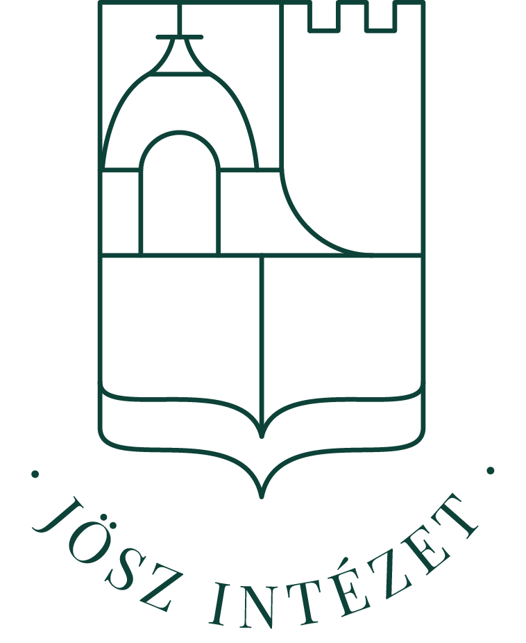
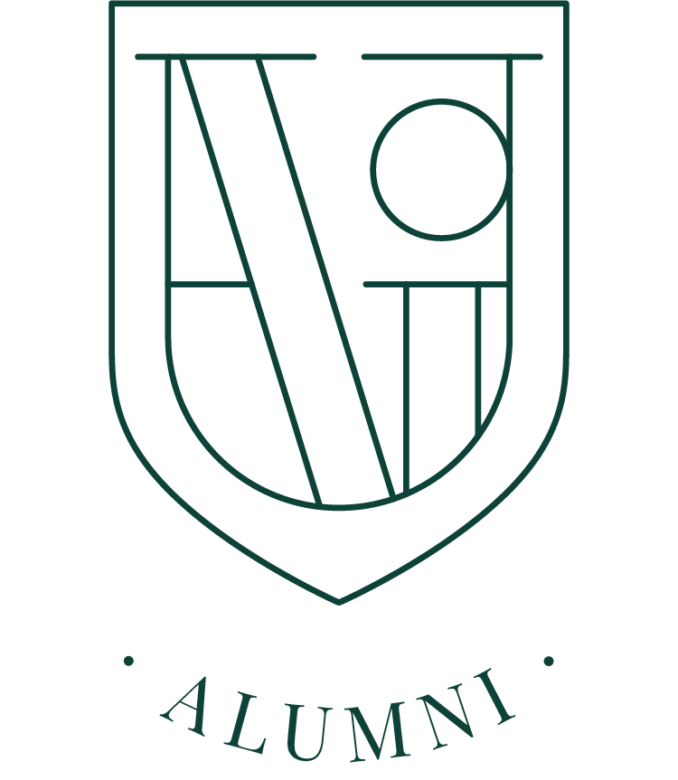
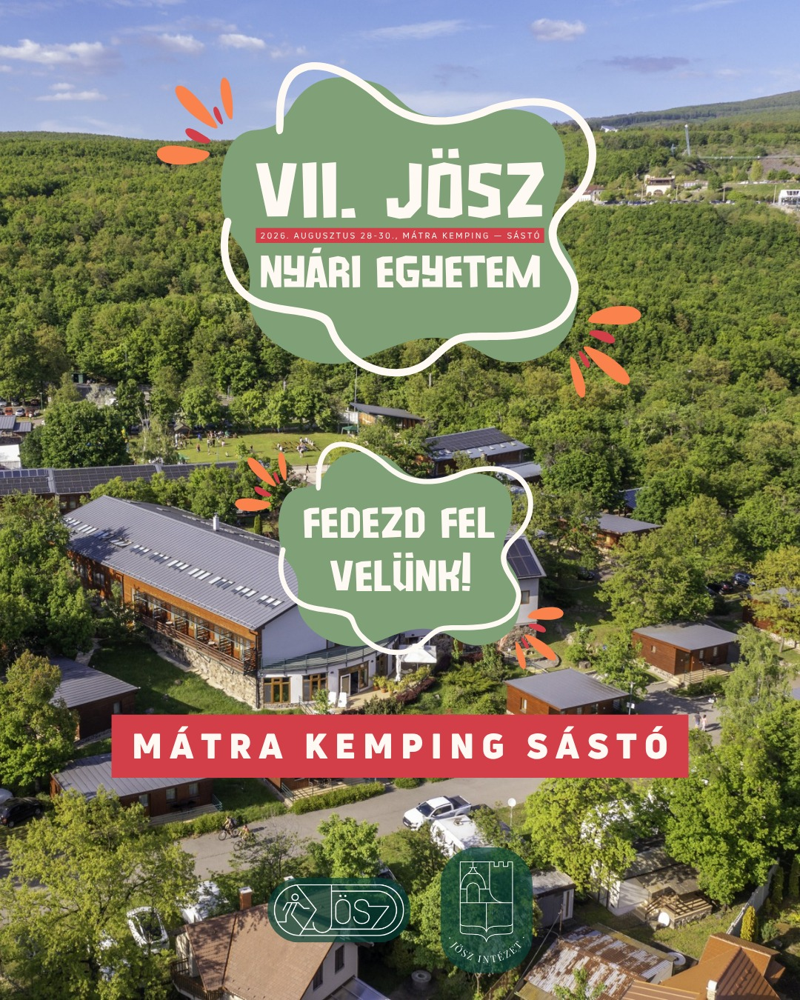
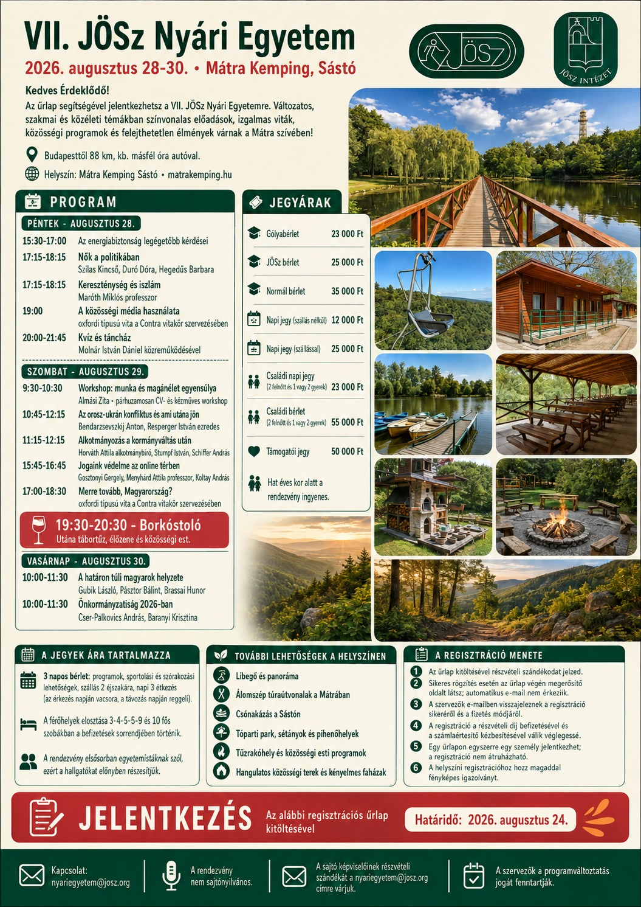

Szórakoztatóipar titkai jogi szemmel
Kolláth Mihály Gábor, Maróth Márton

Három nap szakmai program, vita, közösség és kikapcsolódás a Mátra szívében. Előadások, workshopok, borkóstoló, tábortűz, túra és csónakázás egy helyen.
A szakmai témák mellett a hétvége legalább annyira szól a közösségről, új ismeretségekről és a Mátra felfedezéséről.
Jog, közélet, gazdaság, külpolitika és alkotmányosság — közvetlenül olyan előadóktól, akik alakítják a szakmai és közéleti diskurzust.
A program 2026. augusztus 28-i állapot szerint látható. Szűrj helyszín, előadó, téma, jelleg vagy időpont alapján.

Kolláth Mihály Gábor, Maróth Márton
Szilas Kincső, Dúró Dóra, Hegedűs Barbara
Milyen lehetőségei és kihívásai vannak a nőknek a magyar politikában? Milyen tapasztalatokkal jár a közéleti szerepvállalás, és milyen hatással lehet a nők jelenléte a politikai döntéshozatalra?
A VII. JÖSz Nyári Egyetemen három, a közéletben aktív szereplő járja körül a témát:
Dúró Dóra – országgyűlési képviselő
Szilas Kincső – politikus
Hegedűs Barbara – politikus
A „Nők a politikában" című kerekasztal-beszélgetésen többek között arra keressük a választ, hogy milyen út vezet a politikai szerepvállalásig, milyen kihívásokkal találkozhatnak a nők a közéletben, és milyen szerepet tölthetnek be a magyar politikai élet formálásában.
A beszélgetés során különböző tapasztalatok és nézőpontok találkoznak, így a résztvevők személyes élményeiken és közéleti munkájukon keresztül is betekintést adnak a politikai szerepvállalás világába.
Maróth Miklós
Két világvallás, évszázadokon átívelő találkozások – a VII. JÖSz Nyári Egyetemen a kereszténység és az iszlám kapcsolatáról hallhatunk előadást.
A rendezvény nyitónapjának előadója Dr. Maróth Miklós, klasszika-filológus, orientalista, egyetemi tanár, a Magyar Tudományos Akadémia rendes tagja és korábbi alelnöke. Kutatásainak középpontjában az ókori görög és a keleti művelődés kapcsolódási pontjai, különösen a filozófia és az arab tudományosság állnak.
Meghatározó szerepet vállalt a Pázmány Péter Katolikus Egyetem Bölcsészettudományi Karának megszervezésében, majd 1992 és 1999 között annak dékánjaként tevékenykedett.
Előadásában a kereszténység és az iszlám történelmi, kulturális és szellemi kapcsolatait járja körül.
A Contra Vitakör egy olyan közösség, amelyet azért hoztunk létre, hogy teret adjunk a kulturált vitázásnak és a különböző nézőpontok megismerésének. Hiszünk abban, hogy a jó vita nem a másik fél legyőzéséről szól, hanem arról, hogy megtanuljunk érvelni, kérdezni, meghallgatni egymást, és közben mi magunk is fejlődjünk.
A nyitónap estéjén strukturált vitaformában mérhetik össze érveiket a jelentkezők: a felszólalók előre kiosztott álláspontokat képviselnek, felkészülési idő után pedig moderált keretek között ütköztetik gondolataikat. A hangsúly az érvelési technikán, a gyors gondolkodáson és a másik fél állításainak pontos megértésén van.
A programra mindenkit várunk, aki szeretné fejleszteni retorikai és vitakészségét – előzetes tapasztalat nem szükséges.
Molnár István Dániel
A nyitónap estéje a magyar néptánc jegyében telik. A táncházban a résztvevők oktató vezetésével sajátíthatják el a legismertebb táncok alaplépéseit.
A táncházat Molnár István Dániel vezeti, aki fokozatosan, a legegyszerűbb motívumoktól indulva tanítja a lépéseket – így azok is bátran becsatlakozhatnak, akik most először próbálják ki magukat a táncparketten.
A program célja a közös élmény és a kötetlen kikapcsolódás: nincs kötelező tudás, csak jókedv és mozgás.
Csapatos kvízjátékra várunk mindenkit, ahol a kérdések a legkülönbözőbb területeket érintik – történelem, közélet, popkultúra, sport és tudomány –, így minden csapatban jól jön a sokszínű tudás.
Az aznapi programokhoz kapcsolódó kérdések is felbukkanhatnak, így annak sincs hátránya, aki figyelmesen követte a programokat.
A játék kötetlen hangulatban zajlik, csapatokat a helyszínen is lehet alakítani, a legjobban teljesítőket pedig jutalom várja.
Cili
Almási Zita
Létezik-e egyáltalán stresszmentes élet? És ha nem, hogyan tanulhatunk meg együtt élni a hullámokkal ahelyett, hogy elárasztanának minket?
A VII. JÖSz Nyári Egyetem pszichoedukációs workshopja Almási Zita vezetésével a stresszkezelés gyakorlati oldalát járja körül. A foglalkozás azzal indul, hogy leszámol modern korunk mítoszaival: szó lesz a stressz „hasznáról" és káros hatásairól, valamint arról, miért vezet zsákutcába az elkerülés és a rumináció ördögi köre.
A második blokk az önismeretről szól: a Holmes–Rahe Életesemény és Stressz Skála segítségével a résztvevők feltérképezhetik saját stresszforrásaikat, egy gyakorlat során pedig felidéznek egy korábbi, kevésbé megterhelő stresszes élethelyzetet – például egy vizsgát –, és tudatosítják, milyen fizikai és mentális tünetekkel reagált rá a testük. Ennek felismerése a prevenció első lépése.
A harmadik rész a work-life balance kérdését állítja középpontba: hogyan hagyható otthon – vagy éppen a munkahelyen – a stressz? Itt kerül szóba a zsilipelés technikája, a határhúzás fontossága és a mindennapi rítusok szerepe.
A workshop leghosszabb, gyakorlati blokkjában a résztvevők konkrét eszközöket kapnak a kézbe: légzéstechnikát és szomatikus gyakorlatokat, „safe place" imaginációs gyakorlatot, valamint az erőforrás-kerék rajzos gyakorlatát, amellyel mindenki megkeresheti a saját belső erőforrásait. A foglalkozást rövid, irányított meditáció zárja.
Kreatív kikapcsolódás a délelőtti programok mellé: a workshopon a résztvevők saját tervezésű mintát festhetnek egy vászontáskára, amelyet aztán haza is vihetnek.
Az alapanyagokat – táskát, textilfestéket és eszközöket – biztosítjuk, előzetes rajztudásra nincs szükség. A minta lehet egyszerű grafikai motívum, felirat vagy épp a nyári egyetem emléke: a képzeletnek nem szabunk határt.
A program remek alkalom arra, hogy a résztvevők egy kis alkotómunkával kapcsolódjanak ki, és egyedi emlékkel térjenek haza a VII. JÖSz Nyári Egyetemről.
Bendarzsevszkij Anton, Resperger István
Hogyan alakulhat az orosz–ukrán háború, és milyen következményekkel számolhatunk a konfliktus lezárása után? Milyen hatással lehet a háború kimenetele Európa biztonságára és a nemzetközi erőviszonyokra?
A VII. JÖSz Nyári Egyetemen két elismert szakértő járja körül a témát:
Bendarzsevszkij Anton – geopolitikai elemző, a Danube Institute geopolitikai igazgatója
Resperger István – biztonságpolitikai szakértő, egyetemi tanár
Az „Orosz–ukrán konfliktus és ami utána jön" című beszélgetésben szó lesz többek között Európa biztonságpolitikai helyzetéről, a nagyhatalmi érdekek alakulásáról, valamint arról, hogy milyen új kihívásokkal és lehetőségekkel kell számolni a háború után.
Horváth Attila, Stumpf István, Schiffer András
Merre tart a magyar alkotmányosság?
A VII. JÖSz Nyári Egyetemen három elismert szakember járja körül a témát:
Prof. Dr. Stumpf István – Széchenyi-díjas alkotmányjogász, politológus és egyetemi tanár, korábbi miniszter és alkotmánybíró
Prof. Dr. Horváth Attila – alkotmánybíró, jogtörténész és egyetemi tanár
Schiffer András – ügyvéd, volt országgyűlési képviselő
Az „Alkotmányozás a kormányváltás után" című kerekasztal-beszélgetésen arra keressük a választ, hogy milyen jogi és politikai kihívásokkal nézhet szembe Magyarország, és mekkora mozgástér áll rendelkezésre az alkotmányos berendezkedés alakítására.
Gosztonyi Gergely, Menyhárd Attila, Koltay András
Merre tart a szabályozás? Az online világban való jelenlétünk többé nem csupán technológiai kérdés, hanem mindennapi jogaink védelmének új csataterévé vált. A digitális nyilvánosság, a közösségi platformok algoritmusai és a mesterséges intelligencia terjedése olyan jogi kihívásokat hozott felszínre, amelyekre a hagyományos jogi keretek már nem nyújtanak teljes körű választ.
A VII. JÖSz Nyári Egyetemen három elismert szakértő járja körül a témát:
Dr. Menyhárd Attila – a polgári jog és a joggazdaságtan elismert kutatójaként a technológiai fejlődés magánjogi és felelősségi kérdéseit elemzi
Dr. Gosztonyi Gergely – az online véleménynyilvánítás, a platformszabályozás és a digitális alapjogok szakértője
Dr. Koltay András – a médiaszabályozás és a szellemi tulajdonjog területének kiemelkedő alakja
Contra Vitakör
A Contra Vitakör egy olyan közösség, amelyet azért hoztunk létre, hogy teret adjunk a kulturált vitázásnak és a különböző nézőpontok megismerésének. Hiszünk abban, hogy a jó vita nem a másik fél legyőzéséről szól, hanem arról, hogy megtanuljunk érvelni, kérdezni, meghallgatni egymást, és közben mi magunk is fejlődjünk.
A nyári egyetem második vitakörén egy konkrét, sarkalatos kérdés kerül terítékre: milyen irányba induljon el az ország a következő években? A felszólalók előre kijelölt álláspontokat képviselnek, és moderált keretek között ütköztetik érveiket Magyarország gazdasági, társadalmi és külpolitikai jövőjéről.
A cél, hogy a hallgatóság több nézőpontból, ütköztetve hallhassa az érveket, és maga alkothasson véleményt. A program nyitott: bárki becsatlakozhat hallgatóként vagy – jelentkezés alapján – vitázóként is.
Szombat este borkóstoló vár a résztvevőkre a konferenciaterem melletti borospincében, ahol a résztvevők szakavatott vezetéssel ismerkedhetnek meg néhány jellegzetes magyar borvidék tételeivel.
A kóstoló során szó lesz a fajtákról és a borvidékek sajátosságairól, a kóstolás alapjairól, valamint arról, hogyan érdemes leírni és felismerni egy bor jellemzőit. A program kötetlen beszélgetésre és ismerkedésre is alkalmat ad a nyári egyetem résztvevői között.
A programon való részvétel 18 éven felüli résztvevőink számára biztosított.
Gubik László, Lakatos Adrián, Brassai Hunor
Milyen kérdések határozzák meg ma a külhoni magyarság mindennapjait? Hogyan őrizhető meg a nemzeti identitás és a közösségi összetartozás a változó társadalmi és politikai környezetben?
A VII. JÖSz Nyári Egyetemen a külhoni magyar közélet három aktív szereplője járja körül a témát:
Gubik László
Lakatos Adrián
Brassai Hunor
A beszélgetésen szó lesz az anyanyelvi oktatás helyzetéről, a szórványosodás és az elvándorlás kihívásairól, a magyar–magyar kapcsolattartás formáiról, valamint arról, milyen szerepet vállalhat a fiatal generáció a külhoni magyar közösségek megtartásában.
A különböző régiókból érkező vendégek saját közösségeik tapasztalatain keresztül mutatják be a különbségeket és a közös pontokat.
Cser-Palkovics András, Baranyi Krisztina
Milyen mozgástere maradt a magyar önkormányzatoknak? Hogyan lehet várost vezetni szűkülő források és bővülő feladatok mellett, és mit hozhatnak a következő évek a helyi közösségek életében?
A VII. JÖSz Nyári Egyetemen két városvezető járja körül a témát:
Cser-Palkovics András – Székesfehérvár polgármestere
Baranyi Krisztina – Budapest IX. kerületének polgármestere
Az „Önkormányzatiság 2026-ban" című beszélgetésen szó lesz az önkormányzati finanszírozás helyzetéről, a helyi adók és az elvonások kérdéséről, a központi kormányzat és a települések viszonyáról, valamint arról, hogy milyen szerepet tölthet be az önkormányzatiság a magyar közéletben a következő időszakban.
A két, eltérő politikai hátterű városvezető saját gyakorlati tapasztalatain keresztül mutatja be, milyen kihívásokkal néznek szembe a magyar települések.
A grafikákra kattintva teljes méretben is megnyithatod őket.
Ismerd meg a VII. JÖSz Nyári Egyetem előadóit és közreműködőit. A portrékra kattintva a grafikák teljes méretben is megnyithatók.
Azok a közreműködők, akikhez jelenleg nincs külön előadói grafika.
Szórakoztatóipar titkai jogi szemmel
15:30–17:00Szórakoztatóipar titkai jogi szemmel
15:30–17:00Táncház
20:00–21:45Túra
8:30–10:30Work-life balance workshop / stresszkezelés
9:30–10:30Határon túli magyarok helyzete
10:00–11:30A Nyári Egyetem a Jogászok Önképző Szervezetének hagyományos, többnapos rendezvénye: szakmai beszélgetések, közéleti viták, kulturális programok és közösségi élmények találkozása.
A JÖSz 2012-ben, joghallgatói kezdeményezésre alakult, 2020 óta pedig hivatalosan is szakkollégiumként működik. Célja, hogy tagjai a klasszikus jogászi műveltséget magas színvonalon képviseljék, nyitottak legyenek a világ kérdéseire, és a változó körülmények között is tettrekészen tudjanak válaszokat adni.
A szervezet három alapvető pillérre épít: az állam- és jogtudományi képzésre, a művelődésre és a szeretetszolgálatra. A JÖSz közössége szakmai kurzusokkal, vitaestekkel, kulturális és közösségi programokkal, valamint társadalmi felelősségvállalási kezdeményezésekkel segíti a joghallgatók fejlődését.
A Jogászok Önképző Szervezetéért Alapítvány biztosítja a szervezet működésének szakmai és pénzügyi hátterét; többek között a szakkollégiumot, a jogi akadémiákat, a Studia Pragmatica programot és a határon túli szakmai közösségeket is támogatja.
A szakkollégium, a szakmai programok és a tehetséggondozás stabil szervezeti háttere.

Kutatási, oktatási, publikációs és tehetséggondozó tevékenység a jogtudomány szolgálatában.

Az egykori tagok szakmai mentorálással, oktatással és közösségi programokkal kapcsolódnak vissza.
A JÖSz működésében a szakmai képzés, a közösség, a társadalmi felelősségvállalás és a határon túli jelenlét szorosan összekapcsolódik.
A JÖSz 2012-ben az ELTE ÁJK hallgatóinak kezdeményezésére alakult, amelyhez hamarosan a PPKE joghallgatói is csatlakoztak. 2020 óta hivatalosan is szakkollégiumként működik.
Célja, hogy tagjai magas színvonalú klasszikus jogászi műveltséget szerezzenek, nyitottak legyenek a világ kérdéseire, és olyan közösségben fejlődjenek, amely alkalmazkodni tud a változó körülményekhez.
A civilisztika, büntetőjog, nemzetközi és európai jog, valamint közjog területén működő tagozatok kurzusokkal, versenyfelkészítéssel és mentorálással támogatják a hallgatók szakmai fejlődését.
A képzés a kritikus gondolkodás, az érvelési és szónoki készségek fejlesztésére is hangsúlyt helyez. 2019 óta a tagok 20 OTDK-helyezést értek el, 2020 óta pedig több mint 15 rangos nemzetközi és több mint 100 országos versenyeredménnyel büszkélkedhetnek.
A művelődési programok a jogi ismereteken túl kulturális és társasági élményeket kínálnak. Kiállítások, színházi programok, önképzések, csapatépítők és közös utazások segítik, hogy a tagok szélesebb látókörrel és erős közösségi kapcsolatokkal gazdagodjanak.
A JÖSz a jogászi hivatás társadalmi felelősségét is fontosnak tartja. Adománygyűjtések, közösségi akciók és jogsegélyprogram keretében hallgatók szakmai felügyelet mellett segítenek rászorulóknak.
A szervezet határon túli közösségeket is támogat, többek között kárpátaljai és vajdasági karitatív programokkal.
A JÖSz-Erdély 2023 januárjában jött létre a kolozsvári kurzussorozat folytatásaként, célja az erdélyi magyar joghallgatók összefogása és egyetemen túli szakmai fejlődésük támogatása.
A vajdasági tagszervezet szegedi és szabadkai kurzusnapokból nőtt ki, és szakmai-közösségi programokkal járul hozzá a Kárpát-medencei magyar joghallgatói közösség építéséhez.
A 2017-ben létrehozott Alumni célja, hogy a JÖSz-höz tartozás hosszú távú kapcsolat maradjon. Az alumnusok mentori munkával, oktatással és szakmai tanácsadással segítik az aktív hallgatókat.
Az Alumni közel 150 fős közösség, saját programokkal, éves Alumni-vacsorával és kötetlen találkozókkal.
A JÖSz Intézet kutatási, kutatástámogató, oktatási és kiadói tevékenységet végez, publikációs felületet és tehetséggondozó programokat biztosít. Az Energia, IT és AI Akadémiák a jog és más szakterületek találkozásában adnak gyakorlati, naprakész tudást.
A JÖSz Könyvtár a szakkollégisták és kutatók tudományos munkáját támogatja hazai és külföldi jogtudományi, társadalomtudományi és egyetemi szakirodalommal.
A 2022-ben létrehozott Studia Pragmatica a joghallgatók gyakorlati tapasztalatszerzését segítő program. A résztvevők partner ügyvédi irodákban, mentorálás mellett dolgozhatnak valódi ügyeken, az egyetemi időbeosztáshoz igazítható munkarendben.
A Nyári Egyetem a JÖSz életében már hagyománynak számító többnapos rendezvénysorozat. Jogszakmai beszélgetések, közéleti viták, kulturális és közösségi programok adnak lehetőséget arra, hogy a résztvevők betekintsenek a JÖSz mindennapjaiba, közben tudást és kapcsolatokat szerezzenek.
A rendezvény nemcsak szakkollégistáknak és joghallgatóknak szól: minden érdeklődőt vár.
A részvételi lehetőségek között többféle bérlet és napijegy közül választhatsz. Hat év alatt a rendezvény ingyenes.
Faházak, tópart, erdő és közösségi terek — mindez közvetlenül a Mátra egyik legismertebb kirándulóhelyén.

A szakmai programok között is érdemes időt hagyni a környék felfedezésére: Sástó és a Mátra számos szabadtéri és közösségi lehetőséget kínál.
Libegőzés és hegyi panoráma közvetlenül a kemping közelében.
Erdei kirándulóösvények és mátrai túrák rövidebb vagy hosszabb szabadidős blokkokhoz.
A központi tavon csónakázással is ki lehet kapcsolódni a programok között.
Zöld, zegzugos park, sétányok és pihenőhelyek veszik körbe a tavat.
Szabadtéri pihenők és tűzrakóhelyek adnak teret a közös esti programoknak.
A kemping fedett közösségi terekkel és hangulatos pincével is rendelkezik.
A térképen külön jelölve vannak a rendezvényhelyszínek, a szállások, a mosdók és az egyéb fontos pontok. Kattints a térképre a nagyításhoz.
A kemping területén 5 km/h sebességkorlátozás van érvényben.
A Mátra Kemping Sástó címe: 3200 Gyöngyös, Farkas út 4. Budapestről autóval körülbelül 88 km, nagyjából másfél óra. Tömegközlekedéssel a 1045-ös busz közvetlenül elvisz Sástóig.
Első program 15:30 · Táncház 21:45-ig
Indulj Budapestről fél kettő körül, így marad idő a becsekkolásra az első program előtt.
Ez a járat kényelmes ráérkezést ad. A következő busz 15:22-kor ér Sástóra, ami már csak nyolc perccel a kezdés előtt van.
A táncház után indulva éjfél előtt Budapesten lehetsz.
Ez az utolsó járat Sástóról Budapest felé.
Első workshop 9:30 · Esti programok késő estig
Negyed órád marad a reggeli workshopok kezdéséig.
A nap első járata. A következő, 9:22-es érkezés már nagyon szoros a 9:30-as kezdéshez.
Aki csak a délelőtti panelekre jön: 08:45 → 10:22.A borkóstoló és az esti zenélés után csak akkor indulj, ha nem ittál. Egyébként maradj éjszakára, és reggel indulj haza.
Ha csak a nappali programokra jössz, ez az utolsó járat.
Programok 10:00–11:30
Ha csak a zárónapra érkezel, ez kényelmesen hagy időt a kezdésig.
Bő félórád marad a programok kezdéséig.
A délelőtti programok után indulva kora délután Budapestre érhetsz.
A programzárás után ez a legkézenfekvőbb járat.
Ha maradnál még: 14:44 → 16:15 vagy 16:44 → 18:15.A térképen közvetlenül áttekintheted az útvonalat. Autóval a kemping a 24-es főútról, Mátrafüred felől érhető el; a helyszínen parkolási lehetőség van.
Megnyitás Google Mapsben ↗
Az információs plakát archív tájékoztatóként továbbra is elérhető. A jelentkezési időszak lezárult; az aktuális programot a fenti Program szekcióban találod.
Plakát letöltése{kind=link}